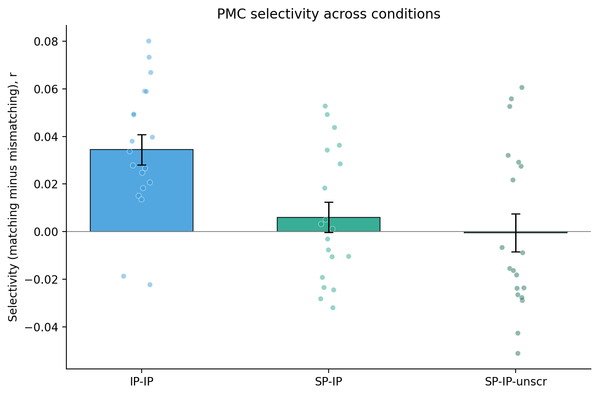

We tested whether the shared PMC pattern at each interruption epoch is epoch-specific: whether ISPC at matching epochs (i = j) exceeds ISPC at mismatching epochs (i ≠ j). Inter-subject pattern correlation (ISPC) was measured in a 15-second window spanning the ten TRs that began 7.5 s after interruption onset (the first five post-onset TRs were discarded to avoid hemodynamic carry-over from the preceding story segment). For every ordered pair of epochs (i, j) the Pearson correlation between the participant's PMC pattern at epoch i and the across-participant average PMC pattern of the other participants at epoch j was computed at every TR and averaged across the ten TRs to a single (seventeen-by-seventeen) score. For each participant the seventeen diagonal entries formed the matching set and the off-diagonal entries formed the mismatching set; participant selectivity was mean(matching) − mean(mismatching), and group selectivity the across-participants mean. ISPC was computed under three inter-subject schemes: one within-condition (IP-IP) and two across-condition (SP-IP, SP-IP-unscr), in which each scrambled-pause participant is compared with the across-participant average pattern of the intact-pause group. The scrambled-pause story order differs from the intact order, so for SP-IP the two groups are aligned by serial position and a matching entry pairs interruptions that follow different story segments. SP-IP-unscr instead re-orders the scrambled-pause interruptions into the intact narrative sequence, so a matching entry pairs the two groups’ interruptions after the same story segment and the preceding local story content is matched. PMC voxels were defined by the project's anatomical PMC mask and per-voxel timecourses were z-scored across the entire run before analysis.
To test whether group selectivity exceeds chance, we reshuffled each participant's matching-versus-mismatching labels: the matching and mismatching ISPC values were pooled and randomly re-assigned to sets of the original sizes, participant selectivity was recomputed, and the group mean was recorded; 10000 iterations built the null. The one-tailed permutation p is (k + 1)/(10000 + 1), where k is the number of null group selectivities at-or-above the observed value (expected direction: > 0). The table also reports the standard error of the group selectivity, a bootstrap 95% confidence interval (10000 iter, resampling participants), a descriptive paired t-test on subject (matching − mismatching) values, and Cohen's d; the legend under the table defines each column.
Result 2.2 established that the interruption-phase PMC pattern is shared across intact-pause participants and specific to the epoch it came from. This section asks what that shared pattern is made of, by testing whether the scrambled-pause group carries it. If the pattern reflected only the local story segment that preceded each interruption, it should appear in the scrambled-pause group once the epochs are re-ordered to match story content (SP-IP-unscr). If it instead requires the intact narrative, neither alignment should recover it.
Primary stats (unshaded) | Descriptive / context (light gray)
| Cond | Selectivity | SE | 95% CI | p (perm) | n | Mean matching r | SEmatch | Mean mismatching r | SEmismatch | t | df | p (paired) | d |
|---|---|---|---|---|---|---|---|---|---|---|---|---|---|
| IP-IP | 0.0345 | 0.0064 | [0.0222, 0.0463] | 0.0002 | 19 | 0.1166 | 0.0126 | 0.0822 | 0.0075 | 5.418 | 18 | 3.79e-05 | 1.243 |
| SP-IP | 0.0060 | 0.0063 | [-0.0059, 0.0183] | 0.2466 | 19 | 0.0783 | 0.0083 | 0.0723 | 0.0085 | 0.946 | 18 | 0.3567 | 0.217 |
| SP-IP-unscr | -0.0005 | 0.0079 | [-0.0153, 0.0146] | 0.5256 | 19 | 0.0722 | 0.0079 | 0.0727 | 0.0086 | -0.064 | 18 | 0.9498 | -0.015 |

Bars: group-mean selectivity (matching − mismatching r). Whiskers: ±SE across participants. Dots: subject selectivity values. IP-IP compares each intact-pause participant with the average pattern of the other intact-pause participants and is shown for reference; SP-IP and SP-IP-unscr compare each scrambled-pause participant with the across-participant average of the intact-pause group, aligned by serial position and by story segment respectively.
SP-IP asks whether the scrambled-pause participants share the intact-pause group’s interruption pattern at the same serial position. Because the story segments are scrambled, an interruption in a given position follows a different story segment for the two groups, so a matching (diagonal) SP-IP entry pairs interruptions that share their position in the run but not the narrative content that preceded them. The intact-pause and scrambled-pause conditions were run in separate groups of participants, so the within-condition intact-pause selectivity and the SP-IP selectivity (each participant’s mean matching minus mean mismatching inter-subject pattern correlation) were compared with a Welch two-sample t-test for independent samples (two-sided). Selectivity in the intact-pause group (mean = 0.0345, n = 19) differed significantly from the scrambled-to-intact comparison (mean = 0.0060, n = 19): t(36.0) = 3.170, p = 0.0031, Cohen’s d = 1.028.
SP-IP-unscr repeats the SP-IP comparison after re-ordering the scrambled-pause interruptions into the intact narrative sequence, so a matching (diagonal) entry pairs the scrambled-pause interruption that followed a given story segment with the intact-pause interruption that followed the same story segment. The local story content preceding the two windows is therefore matched, and only the surrounding narrative order differs; comparing it with SP-IP separates content from serial position. The intact-pause and scrambled-pause conditions were run in separate groups of participants, so the within-condition intact-pause selectivity and the unscrambled SP-IP selectivity (each participant’s mean matching minus mean mismatching inter-subject pattern correlation) were compared with a Welch two-sample t-test for independent samples (two-sided). Selectivity in the intact-pause group (mean = 0.0345, n = 19) differed significantly from the unscrambled scrambled-to-intact comparison (mean = -0.0005, n = 19): t(34.4) = 3.442, p = 0.0015, Cohen’s d = 1.117.